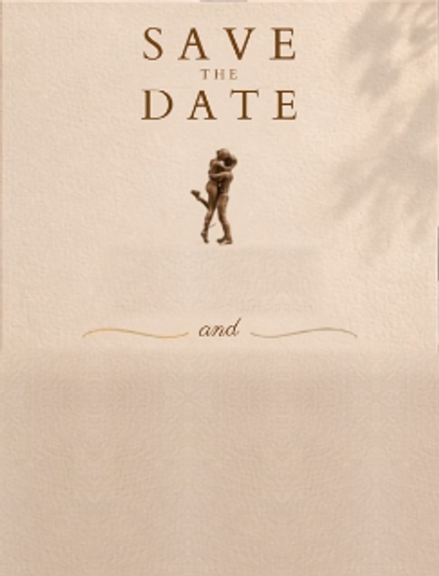
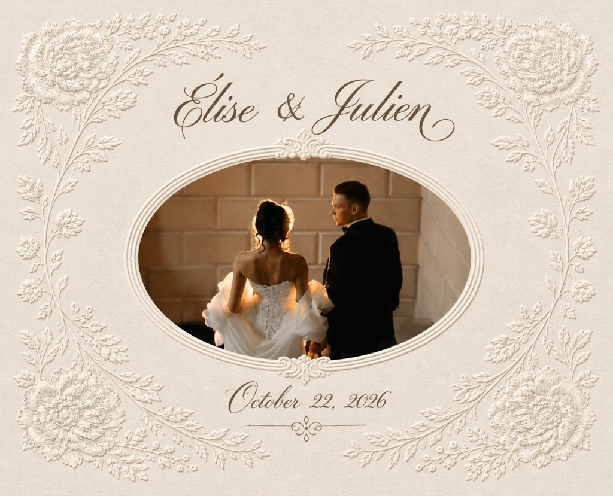
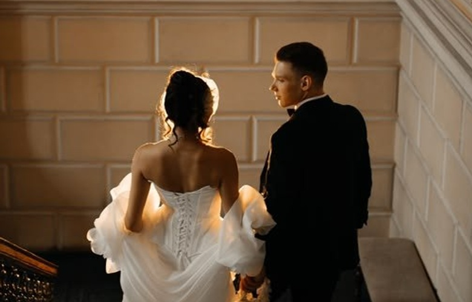
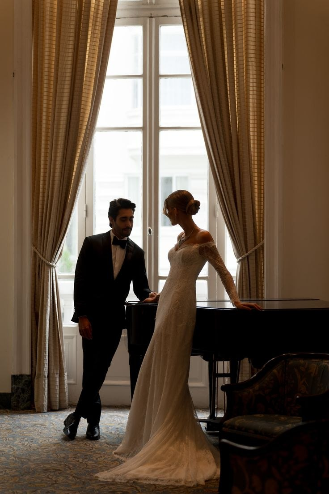
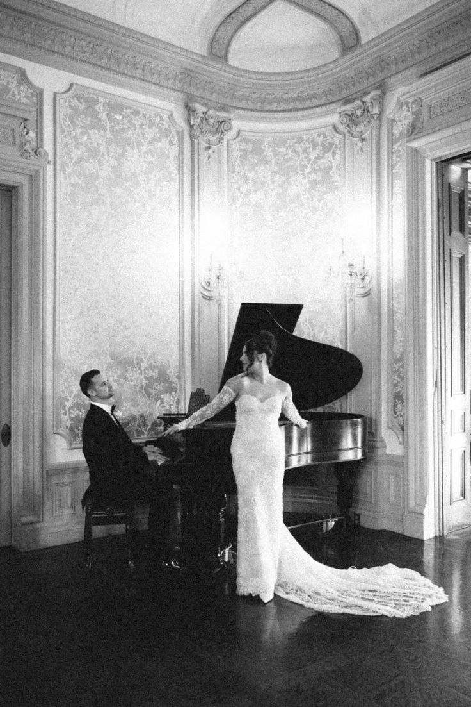
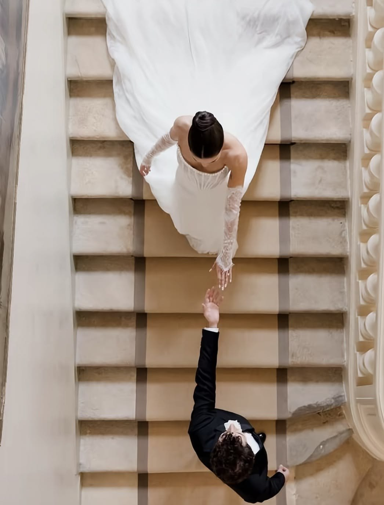
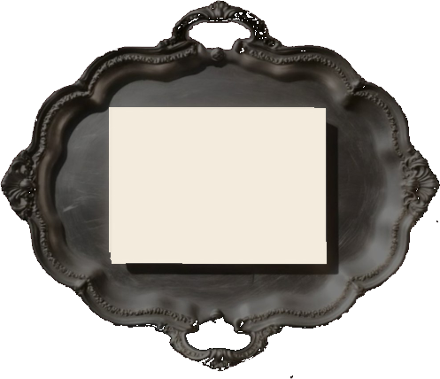
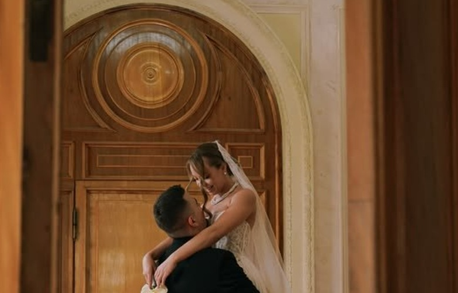
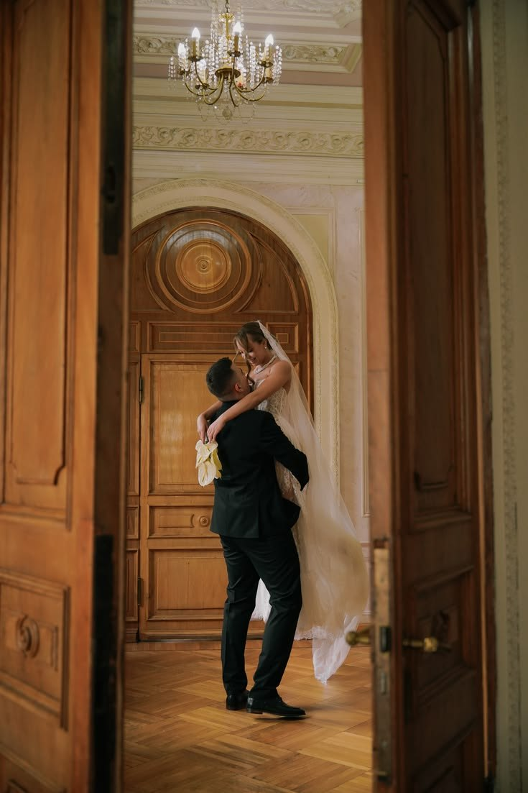
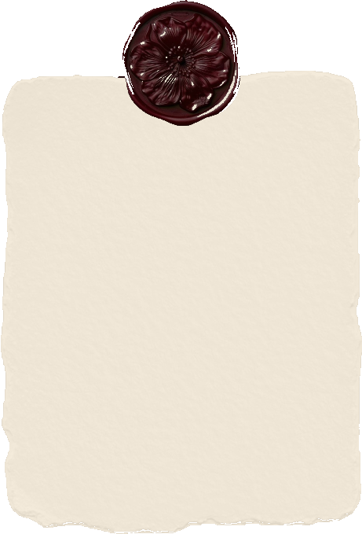

SAVE THE DATE
Élise Beaumont Julien Laurent
22 OCTOBER 2026
PARIS, FRANCE

SAVE THE DATE
22 OCTOBER 2026
PARIS, FRANCE
Chạm vào dấu sáp để mở thiệp · Tap the wax seal to open


October 22, 2026
What began as a chance meeting in Paris became a life built through years of laughter, music, and quiet moments together. We will exchange our forever vows on Thursday, October 22, 2026 at Église Saint-Sulpice, and we hope you’ll celebrate with us.



YOU ARE CORDIALLY INVITED TO CELEBRATE THE WEDDING OF
Thursday, October 22, 2026
at 4:46 PM
Église Saint-Sulpice
Place Saint-Sulpice, 75006 Paris, France

WITH LOVE, WE INVITE YOU
22 OCTOBER 2026
PARIS, FRANCE
ÉLISE

We have always believed that love is found in the quietest details — a shared glance across a candlelit table, the echo of footsteps on stone stairs, and the promise of a lifetime written in the heart of Paris. From the day our paths first crossed to this autumn afternoon at Église Saint-Sulpice, every moment has led us to you.
with love,
Élise & Julien

Élise and Julien first crossed paths in the autumn of 2021 at an intimate chamber music evening in Saint-Germain-des-Prés. What began as a conversation over Debussy and old Parisian architecture quickly blossomed into a shared life of warmth, art, and effortless companionship.
During a quiet weekend getaway in the Loire Valley, Julien planned a private twilight walk through the château gardens. Beneath the stone colonnade, with golden lanterns flickering against the limestone, he asked Élise to spend forever with him.
Together, Élise and Julien have built a home filled with music, Sunday morning markets, and quiet evenings by the piano. Through every season, they have found beauty in the small, unhurried rituals of everyday life.
Now, they look ahead to celebrating their marriage at Église Saint-Sulpice surrounded by the people they love most — honoring the journey that brought them here and the lifetime waiting just ahead.
45 Boulevard Raspail, 75006 Paris, France
Reserved Group Code: ELISEJULIEN26
Distance to Église Saint-Sulpice: 6 minutes walk
BOOK HERE >33 Rue Dauphine, 75006 Paris, France
Reserved Group Code: BEAUMONTLAURENT
Distance to Église Saint-Sulpice: 7 minutes walk
BOOK HERE >
RÉPONDEZ S’IL VOUS PLAÎT
Please confirm your attendance by October 1, 2026